- Picar una cebolleta.
- Cubrir el fondo de la cacerola con aceite y echar a sofreír la cebolleta con una pizca de sal a fuego bajo.
- Picar un pimiento verde italiano y echar a sofreír con la cebolla, con otra pizca de sal.
- Cortar medio chorizo palacios.
- Cortar y añadir las patatas.
- Añadir el chorizo y las hojas de laurel.
- Añadir una cucharadita de pimentón dulce.
- Echar agua caliente hasta que cubra las patatas y echar un puñado de sal. Subir el fuego y esperar a que se hagan las patatas. Ir probando el caldo y añadir sal si es necesario.
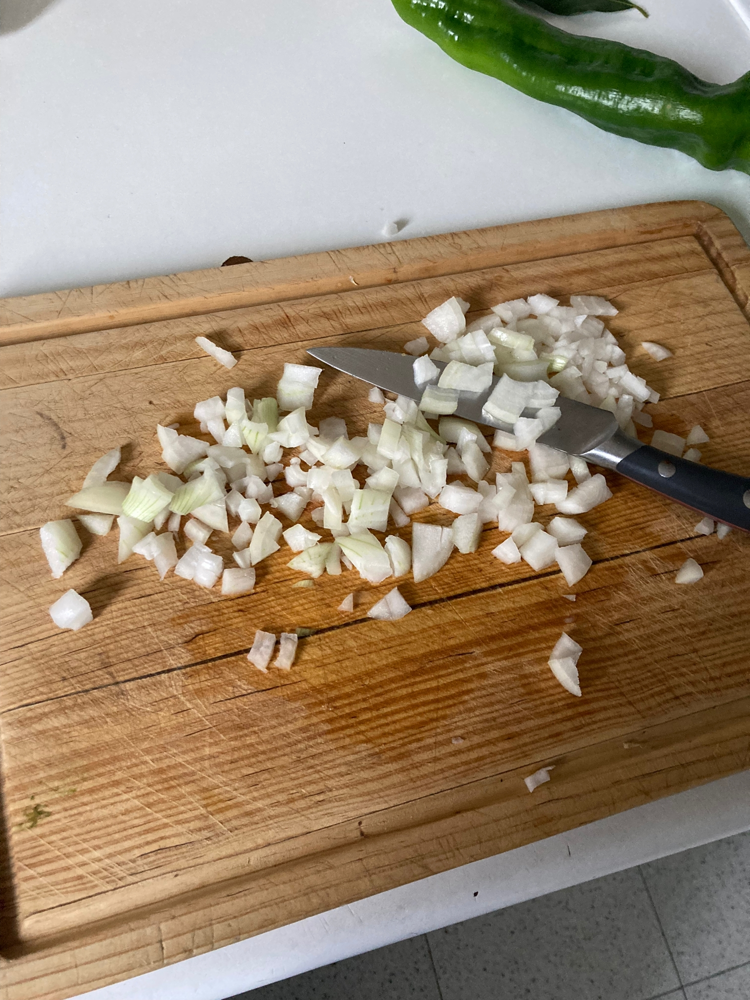
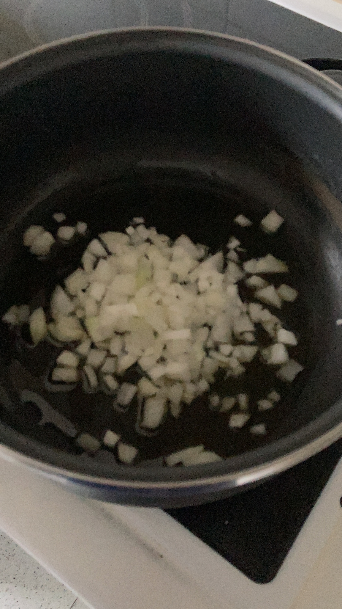
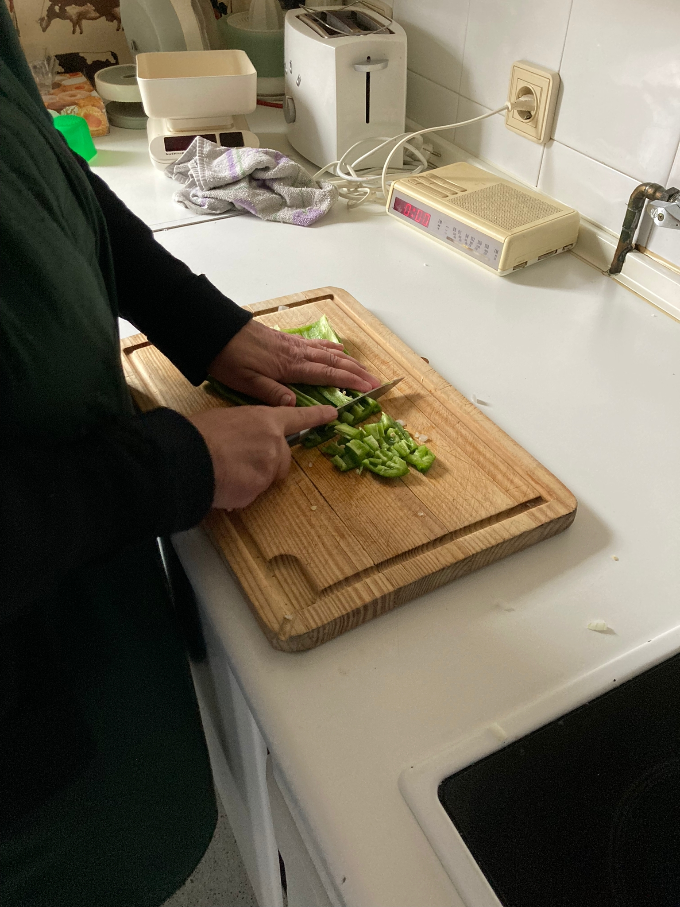 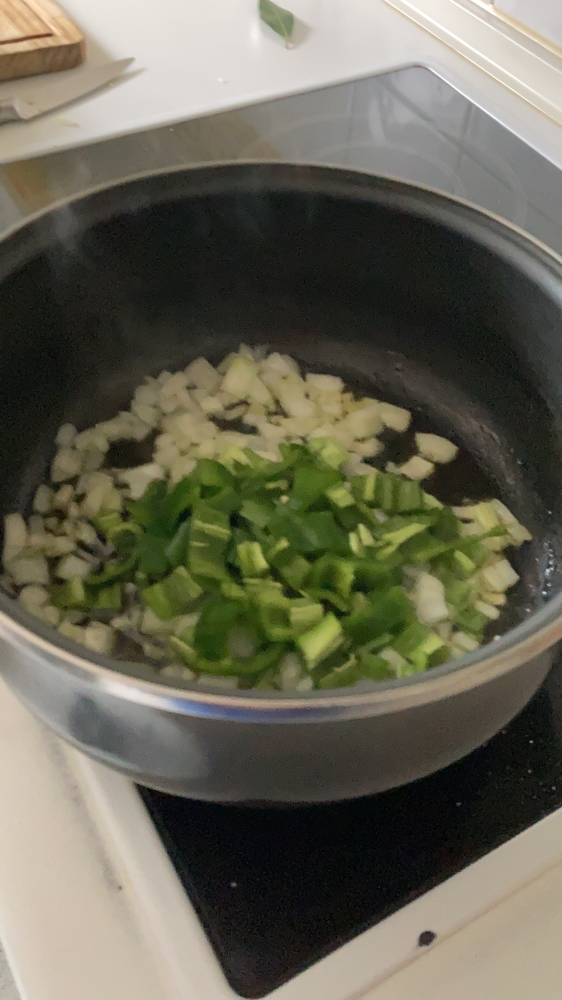 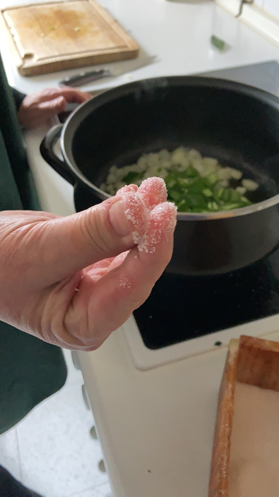
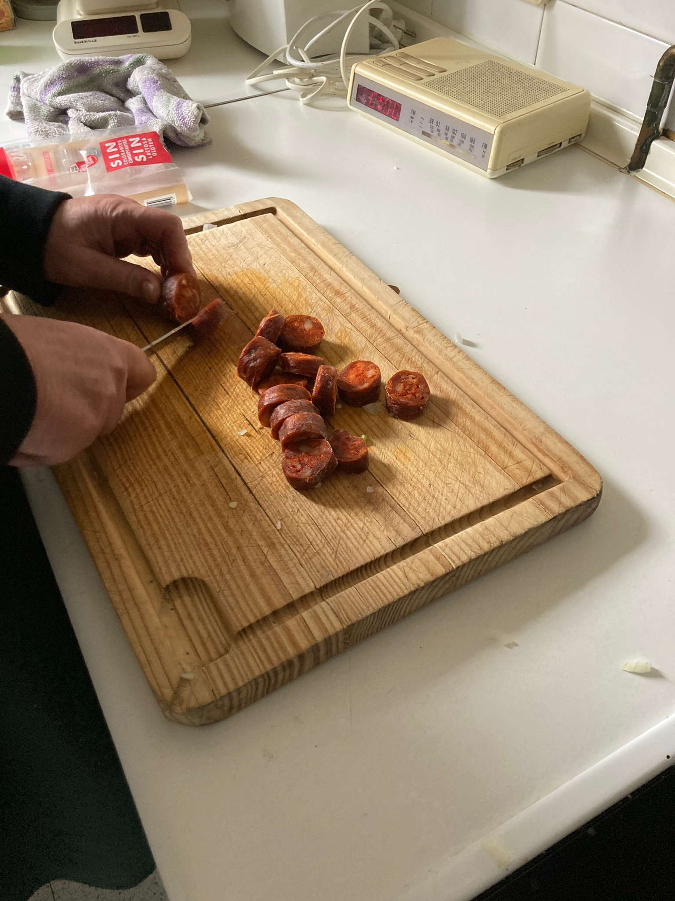
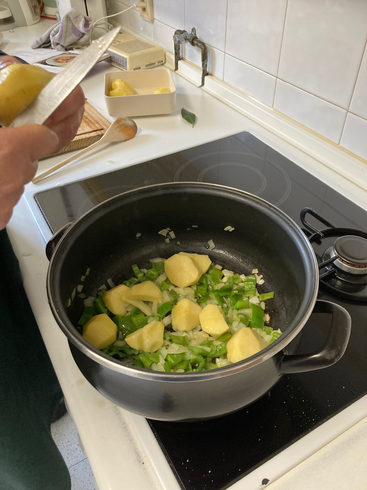 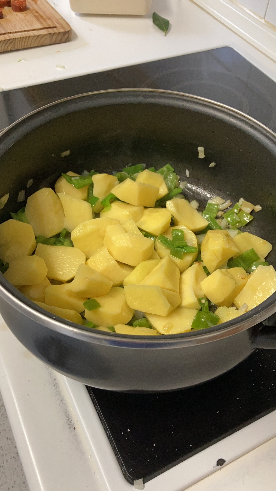
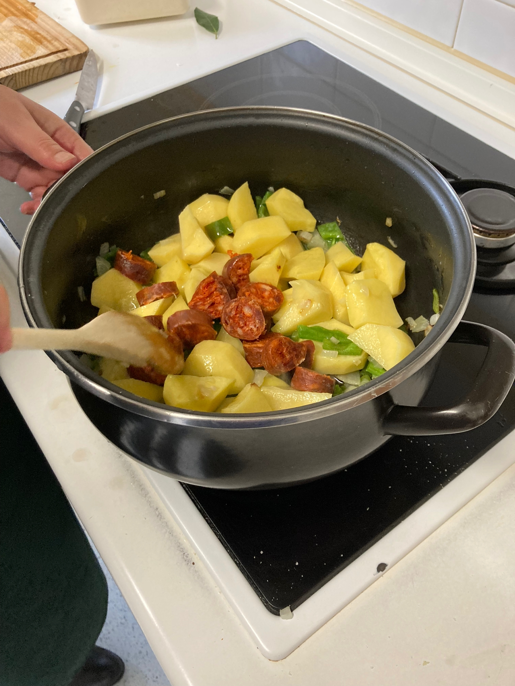 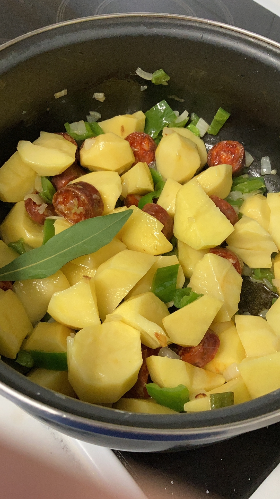
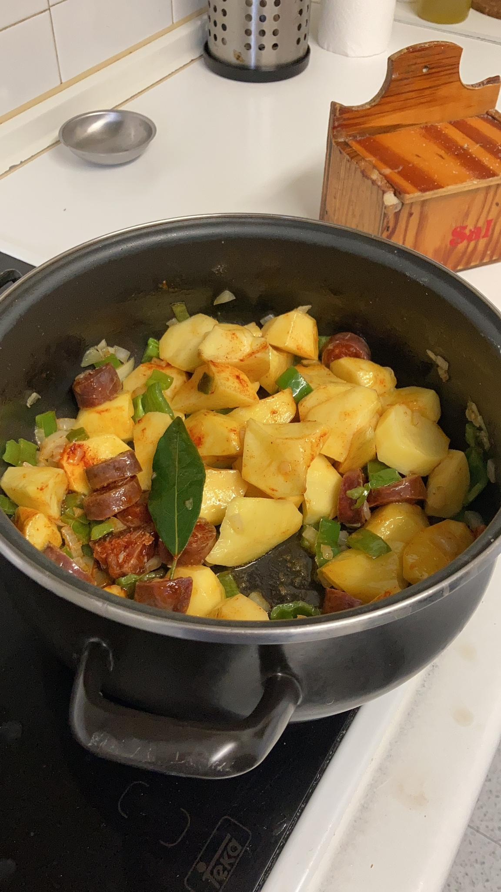